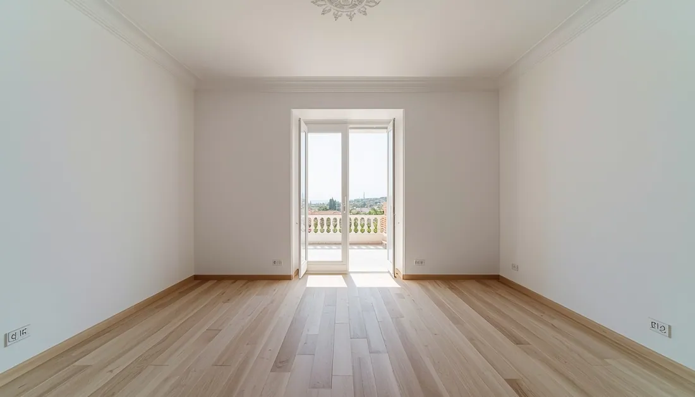

Barcelona tiene uno de los mercados inmobiliarios más activos de España, pero eso no significa que todos los pisos se vendan igual de rápido. Hay pisos que reciben ofertas antes de la primera visita. Y hay pisos que llevan meses publicados, con el anuncio cada vez más "quemado" en los portales, y que acaban vendiendo por debajo del precio al que podrían haber cerrado.
La diferencia entre unos y otros rara vez es la ubicación: eso está dado. Y el precio tiene un papel importante, sí, pero a veces el problema no es que se pida demasiado, sino que el piso no está en condiciones de justificar el precio que merece. Un piso en buen estado, vacío, limpio y bien fotografiado genera una percepción de valor completamente diferente al mismo piso con muebles viejos, un olor a cerrado y fotos con el móvil.
Esta guía está escrita para propietarios que quieren vender su piso en Barcelona y hacerlo bien: más rápido, al mejor precio posible y sin los errores que cuestan dinero.
Qué buscan los compradores en Barcelona en 2026
El perfil del comprador barcelonés ha cambiado. Visita varios pisos el mismo día en los portales antes de solicitar ninguna visita presencial. Llega informado: ya ha consultado el precio del m² en Idealista y en Fotocasa, conoce el rango de precios del barrio y ha descartado ya los pisos que no tienen buenas fotos.
Según los datos de 2025, el 83% de los compradores reconoce haber visualizado una propiedad como su futuro hogar tras ver fotos o vídeos de calidad. Esto significa que la decisión de visitar —o no— un piso se toma antes de llamar. Y la decisión de comprar empieza muchas veces en los primeros 30 segundos de la visita presencial.
Lo que busca el comprador barcelonés en 2026, por orden de prioridad:
- Precio ajustado al mercado real de la zona (no al precio de publicación, sino al de cierre real)
- Piso en condiciones de entrar a vivir, o al menos sin necesidad de una reforma urgente
- Fotografías luminosas y espacios despejados que permitan visualizar el espacio
- Eficiencia energética: en 2026 ya no es un extra, es un factor de filtro activo para muchos compradores
- Documentación en orden: sin sorpresas en la notaría ni problemas con la comunidad
Entender esta lista ayuda a priorizar: no todo lo que se puede hacer en un piso tiene el mismo retorno. Esta guía está organizada por impacto real, no por lo que parece más evidente.

Los 10 pasos para preparar su piso antes de publicarlo
Vaciar o despejar el piso antes de fotografiarlo
Si el piso tiene muebles o enseres que no van incluidos en la venta, el primer paso —y el más impactante— es retirarlos antes de las fotografías y las visitas. Un piso vacío parece más grande, tiene mejor luz, se fotografía mejor y permite al comprador imaginar su propio proyecto sin la interferencia de los objetos de otra persona.
Las viviendas preparadas reciben de media un 40% más de visitas que las que requieren obras o tienen muebles ajenos en mal estado (NAR 2025). Eso son un 40% más de oportunidades de recibir oferta.
Si el piso tiene muebles de décadas anteriores, lo que puede parecer un coste (contratar empresa de vaciado) es en realidad una inversión que normalmente se recupera con creces en el precio de venta o en la velocidad del proceso. Para un piso estándar de 60–80m², el vaciado profesional puede completarse en 1–2 días con un coste de 1.150€–2.200€.
Impacto muy altoLimpieza profunda: diferente a una limpieza de mantenimiento
Una limpieza de mantenimiento y una limpieza profunda son dos cosas muy distintas. La segunda incluye: desengrasado completo de la cocina incluyendo extractores y encimeras, desincrustación de juntas y azulejos del baño, limpieza de todas las ventanas por dentro y por fuera, aspirado y fregado de suelos con atención a rodapiés y esquinas, eliminación de manchas en paredes y puertas, y desinfección completa.
Un piso que huele a limpio y tiene superficies brillantes transmite mantenimiento y cuidado. Eso reduce la sensación de riesgo del comprador y justifica mejor el precio. Coste orientativo: 200€–500€ para un piso estándar. Relación coste-impacto: excepcional.
Si el piso lleva tiempo cerrado o tiene olores fuertes de tabaco o humedad, la ozonización es la solución definitiva: elimina el olor en la fuente, no lo enmascara. Coste añadido: 150€–350€. El día de las visitas, no usar ambientadores fuertes: generan desconfianza en el comprador.
Impacto altoReparar los desperfectos que el comprador verá en los primeros minutos
No es necesaria una reforma completa. Pero hay reparaciones que cuestan poco y tienen un impacto desproporcionado en la percepción del comprador durante la visita. La regla es simple: si algo roto o en mal estado es visible en los primeros minutos de visita, arréglelo antes.
Lista de alto impacto por bajo coste:
- Grifos que gotean o tienen caliza acumulada visible
- Puertas o ventanas que no cierran bien (a menudo solo requieren ajustar las bisagras)
- Enchufes o interruptores rotos o amarillentos
- Lechadas de baño sucias o con puntos negros
- Manchas de humedad en paredes o techos (aunque sea antigua, el comprador la ve y la magnifica)
- Persianas que no suben o bajan correctamente
- Bombillas fundidas (asegúrese de que toda la iluminación funciona el día de las fotos)
Coste total orientativo de estas reparaciones: 200€–600€. El efecto psicológico en el comprador es considerable: un piso sin esos detalles transmite que "está bien cuidado", lo que reduce el margen de negociación a la baja.
Impacto alto, coste bajoPintar en colores neutros si las paredes lo necesitan
Si las paredes tienen manchas visibles, están desconchadas, tienen colores muy intensos o simplemente tienen un aspecto deteriorado, pintar en blanco o gris claro es una de las mejoras con mejor relación coste-impacto que puede hacer antes de vender.
El blanco amplía visualmente el espacio, mejora la percepción de luz y facilita que el comprador proyecte sus propias ideas. Colores marcados (rojos, azules oscuros, verdes intensos) pueden eliminar el piso de la lista de un comprador antes de que llegue a ver el resto.
Coste orientativo de pintura básica en un piso de 70m²: 800€–1.500€ con profesional. Una reforma parcial bien ejecutada puede aumentar el precio final entre un 7% y un 15% según datos de Trias Barcelona 2026. En un piso de 300.000€, eso son entre 21.000€ y 45.000€ de diferencia potencial. Con esa perspectiva, 1.000€ de pintura tiene un ROI muy claro.
Impacto altoMaximizar la iluminación antes de las fotografías y visitas
La luz es el factor más determinante en la percepción de amplitud de un espacio. Un piso con buena luz parece más grande que uno idéntico con poca luz. Dos cosas que puede hacer antes de las fotos y las visitas sin coste adicional significativo:
- Sustituir todas las bombillas fundidas. Utilizar bombillas LED de luz cálida y alta luminosidad
- Abrir todas las persianas y cortinas. Si hay cortinas pesadas que bloquean la luz, retirarlas temporalmente
- Limpiar los cristales por fuera. La suciedad exterior en ventanas puede reducir la entrada de luz de forma visible
- El día de las fotos: encender toda la iluminación del piso, incluidos apliques decorativos
Fotografías profesionales: no es un lujo, es una necesidad
Las fotografías son el primer filtro que aplica cualquier comprador en los portales inmobiliarios. Cuatro fotos oscuras y desordenadas hechas con el móvil pueden hacer que su piso desaparezca del radar de compradores serios aunque tenga el mejor precio del barrio.
Un fotógrafo inmobiliario profesional cobra entre 150€ y 400€ por sesión, conoce los ángulos que amplían visualmente los espacios, sabe cuándo y cómo aprovechar la luz natural, y entrega imágenes que destacan en los portales. En un mercado donde el primer filtro es visual y donde los compradores descartan pisos en segundos, esa inversión tiene un retorno inmediato en número de contactos.
Asegúrese de que el piso esté en su mejor estado antes de la sesión fotográfica: vaciado, limpio, con toda la iluminación encendida y sin objetos personales visibles. Un buen piso con malas fotos es una operación perdida antes de empezar.
Impacto muy altoDespersonalizar: el comprador quiere imaginarse a sí mismo
Si el piso está habitado y va a enseñarse con muebles, hay una tarea que tiene mucho impacto y cero coste: eliminar los elementos más personales antes de las visitas y las fotos. Fotografías familiares, colecciones de objetos, ropa visible, elementos religiosos, adornos muy específicos. El objetivo no es hacer el piso frío: es hacer que el comprador pueda imaginarse viviendo allí, en lugar de sentirse de visita en casa de otra persona.
Esta diferencia psicológica tiene impacto directo en las visitas: un comprador que se puede imaginar en el espacio es un comprador más cerca de hacer una oferta.
Impacto medio, coste ceroEl Certificado de Eficiencia Energética: obligatorio, no opcional
El CEE es un documento que clasifica la vivienda en eficiencia energética de la A (mejor) a la G (peor). Es obligatorio para publicar y vender cualquier vivienda, según el Real Decreto 390/2021. Sin él, el anuncio no puede publicarse legalmente en los portales. En la firma ante notario, también debe entregarse al comprador.
Las sanciones por vender sin CEE pueden llegar a 6.000€. Y la media de Barcelona es etiqueta E, según Tinsa, lo que significa que la mayoría de los pisos de la ciudad cumplen este requisito sin grandes modificaciones.
Coste orientativo para un piso en Barcelona: entre 65€ y 200€, incluyendo visita del técnico, informe y registro en el ICAEN (Institut Català d'Energia). La vigencia es de 10 años (5 si la calificación es G). Si ya tiene uno válido de una compra o alquiler anterior, compruebe que no esté caducado.
Solicite el certificado a un técnico habilitado: arquitecto, arquitecto técnico o ingeniero. Desconfíe de quien lo ofrezca sin visita presencial al inmueble: no es legal ni válido.
Obligatorio por leyFijar el precio con datos reales, no con expectativas
Este es el factor más determinante en el tiempo de venta. Más que la presentación, más que las fotos, más que la inmobiliaria. Un precio incorrecto desde el inicio arruina toda la preparación.
El error clásico es fijar el precio de salida un 10–15% por encima del mercado con la idea de "dejar margen para negociar". El problema real es que a ese precio, muchos compradores ni siquiera solicitan visita. El anuncio acumula días en los portales. Los portales registran las bajadas de precio, visibles para todos los compradores. Un anuncio con dos bajadas de precio y tres meses de publicación genera la pregunta: "¿Qué tiene de malo?"
Según Idealista Research 2025, los pisos que salen al mercado más de un 10% por encima de su valor real tardan de media más de 6 meses en venderse y terminan cerrando un 5–8% por debajo del precio que habrían obtenido saliendo a precio correcto desde el inicio. Es el error más caro que puede cometer.
Para fijar el precio correctamente, consulte precios de cierre reales (no de publicación) en el Departament d'Habitatge de la Generalitat o pida un análisis de comparables a un agente con operaciones cerradas en su barrio. Las herramientas de valoración online son un punto de partida, no la referencia definitiva.
Factor más determinanteTener la documentación preparada desde el inicio
Muchas operaciones se ralentizan o se pierden no por problemas con el piso, sino por problemas con la documentación. Tenerla lista antes de la primera visita transmite seriedad y acelera el cierre cuando aparece el comprador adecuado.
Documentos que debe tener preparados antes de publicar:
- Escritura de propiedad o nota simple actualizada del Registro de la Propiedad
- Certificado de Eficiencia Energética vigente (obligatorio)
- Cédula de habitabilidad (obligatoria en Cataluña para vender o alquilar)
- Recibo del IBI del último año
- Certificado de la comunidad de propietarios que acredite estar al corriente de pagos
- Planos del piso (si los tiene; ayudan a los compradores a visualizar distribución)
- Certificado de deuda pendiente del banco si hay hipoteca vigente
- ITE favorable si aplica (edificios de más de 45 años)
¿Vale la pena reformar antes de vender? La regla del 10–15%
Una reforma integral en Barcelona cuesta entre 400€ y 1.000€ por metro cuadrado dependiendo de la calidad (datos de Selarom y Cubicup, 2026). Para un piso de 80m², eso puede significar entre 32.000€ y 80.000€. La pregunta es obvia: ¿recupera esa inversión en el precio de venta?
La respuesta depende del barrio, del estado inicial del piso y del techo de precio de la zona. Una regla práctica:
| Escenario | Inversión | Impacto esperado | ¿Compensa? |
|---|---|---|---|
| Vaciado + limpieza + pintura | 2.000€–4.500€ | Visibilidad, +visitas, menor margen negociación | Siempre |
| Reparaciones puntuales (baño/cocina) | 1.000€–4.000€ | Elimina objeciones, mejor primera impresión | Casi siempre |
| Reforma parcial (cocina o baño) | 6.000€–18.000€ | +7% a +15% en precio (Trias BCN 2026) | Depende del barrio |
| Reforma integral piso degradado, barrio prime | 35.000€–80.000€ | Revalorización del 20–30% (C+E Arquitectura) | Solo si el barrio lo permite |
| Reforma integral en zona con techo de precio | 35.000€–80.000€ | Puede no recuperarse si el mercado está limitado | Con frecuencia no |
La regla práctica que usan los profesionales del sector: si puede invertir entre un 3% y un 5% del valor del piso y subir el precio un 10–15%, tiene sentido. Si la zona tiene un techo de precio que limita la revalorización, las mejoras cosméticas (vaciado, limpieza, pintura) son suficientes.
Antes de decidir reformar, consulte los precios de cierre reales de pisos reformados y sin reformar en su barrio específico durante los últimos 6 meses. La diferencia real en el precio de cierre (no de publicación) es su referencia más fiable.
Errores que cuestan dinero
-
Publicar con fotos de móvil y el piso en mal estado
El primer impacto es visual. Fotos oscuras, desordenadas o con baja resolución eliminan el piso del radar de compradores serios antes de que lean una sola línea del anuncio. Los portales inmobiliarios muestran docenas de pisos en competencia directa: solo llegan a la fase de visita los que superan ese primer filtro visual.
✓ Solución: invertir en fotografía profesional. 200€–400€ con diferencia visible en contactos. -
Salir al mercado con precio un 10% por encima
El mercado inmobiliario de Barcelona en 2026 tiene compradores muy bien informados. Si su precio está por encima del mercado, los compradores lo saben y no solicitan visita. El anuncio se "quema" en los portales, y cada bajada de precio posterior genera desconfianza. El resultado final: menos dinero del que habría obtenido con precio correcto desde el inicio.
✓ Solución: precio basado en cierres reales, no en publicaciones. Pida un análisis de comparables. -
Esconder defectos en lugar de resolverlos
Una mancha de humedad tapada con pintura, una gotera camuflada con un cuadro, un desperfecto cubierto con un mueble. El comprador lo descubre en la visita o en la inspección previa a la firma. En el mejor caso, pide un descuento. En el peor, se retira.
✓ Solución: resolver los desperfectos visibles antes de la venta. Declarar los que no se van a arreglar. -
Invertir en reforma cara donde el barrio no lo justifica
Cada barrio tiene un techo de precio por m². Una reforma integral de 50.000€ en una zona donde la diferencia entre piso reformado y sin reformar es de 20.000€ es una pérdida neta de 30.000€. La motivación de "hacerlo bien para no arrepentirme" es válida si va a seguir viviendo allí; si es para vender, los números mandan.
✓ Solución: calcular el impacto real de la reforma en precio de cierre en su barrio específico antes de empezar. -
Hacer visitas antes de que el piso esté preparado
Una primera visita con mala impresión es muy difícil de revertir. Incluso si el piso mejora después, los compradores que lo vieron "en malas condiciones" raramente vuelven. Es preferible esperar una semana más hasta que el piso esté en su mejor estado y luego empezar a recibir visitas.
✓ Solución: no publicar hasta que el piso esté completamente preparado.

Por qué el vaciado es el primer paso que no puede saltarse
Si el piso tiene muebles o enseres que no van incluidos en la venta, el vaciado no es uno más entre los pasos de preparación. Es el paso que hace posibles todos los demás. Sin vaciado, las fotos no son buenas. Sin buenas fotos, no hay visitas de calidad. Sin visitas de calidad, no hay oferta al precio que el piso merece.
El impacto del vaciado en la venta es directo y concreto:
- Las habitaciones parecen más grandes sin muebles de volumen
- La luz circula mejor y las fotografías son más luminosas
- El comprador puede visualizar el espacio sin la interferencia de objetos ajenos
- Se eliminan las objeciones típicas ("habría que vaciar todo esto", "qué cargado está")
- Si hay home staging posterior, sobre piso vacío es más económico y efectivo
El argumento contrario más frecuente es el coste. Pero la perspectiva correcta es esta: un piso de 75m² en Barcelona tiene un valor aproximado de 385.000€ a precios de 2026. Una semana adicional en el mercado, en términos de coste financiero, mantenimiento y efecto psicológico de "piso quemado", puede costar más que el vaciado completo. Y un vaciado que permite vender 30 días antes o a 10.000€ más tiene un retorno más que claro.
Caso real: piso de herencia en Sant Martí, certificado E, sin reformar desde 2005
Piso de herencia con mobiliario completo de los años 90, certificado energético E, sin reformar. La estimación inicial sin preparación era de 245.000€. Con vaciado completo, pintura parcial, home staging básico y fotografía profesional, el piso se publicó a 265.000€. Vendido en 23 días.
"La inversión de 2.800€ en staging generó 20.000€ más en el precio de venta. El retorno fue del 614%." — Caso documentado por Pedro Ochoa, asesor inmobiliario Barcelona, 2026
Cuándo conviene contratar una empresa de vaciado
Gestionar el vaciado por cuenta propia es perfectamente viable si el piso tiene pocos muebles, el propietario puede desplazarse sin problema y no hay plazos ajustados. Pero hay situaciones en las que contratar empresa especializada es la decisión más eficiente:
- El piso tiene muebles de años anteriores que gestionar supone múltiples visitas durante semanas
- El propietario o los herederos no residen en Barcelona y el vaciado requiere desplazamientos repetidos
- Hay un plazo ajustado para publicar el anuncio o las visitas ya están programadas
- El piso procede de una herencia y hay documentos o objetos que requieren un protocolo de inventario
- No hay tiempo disponible para gestionar el vaciado de forma escalonada
Una empresa completa el vaciado de un piso estándar en 1–2 días de trabajo. Para quien valora su tiempo, la diferencia entre varias visitas de fin de semana durante meses y tener el piso listo para fotografiar en 48 horas es relevante tanto en tiempo como en resultado final.
VaciadoDePisos.cat: vaciado para venta en 24–48 horas
Somos una empresa local con sede en Sant Pere de Ribes, con cobertura en toda el área metropolitana de Barcelona y el Garraf. Además del vaciado, ofrecemos el pack completo hasta el piso listo para fotografiar: vaciado, limpieza profunda, ozonización para olores, pintura básica y reparaciones menores. Un único proveedor para todo el proceso.
Nuestro equipo trabaja regularmente con propietarios que necesitan vaciar antes de vender, coordinar con la inmobiliaria y tener el piso en condiciones en el menor tiempo posible. Lo que más valoran quienes nos contactan antes de vender:
- Visita de valoración gratuita el mismo día o al siguiente
- Presupuesto cerrado sin sorpresas al final
- Vaciado completo en 1–2 días para pisos estándar
- Certificado de gestión de residuos de la Agencia de Residuos de Cataluña
- Coordinación directa con la inmobiliaria si hay una
¿Necesita vaciar el piso antes de venderlo?
Visita gratuita el mismo día. Presupuesto cerrado en menos de 24 horas. El piso listo para fotografiar en 1–2 días.
Zona de cobertura
Preguntas frecuentes
El tiempo medio es de 68 días según datos de 2025. Un 67% de los pisos se venden en menos de tres meses, y un 19% en menos de una semana cuando están bien preparados con precio correcto. El 8% restante tarda más de un año, generalmente por precio o presentación inadecuados.
Depende del piso y del barrio. Según la Asociación de Home Staging de España (ASHE), el 75% de las propiedades se venden en menos de 90 días con preparación, y el 55% en menos de 40 días. En el 41% de los casos se obtiene un aumento en el precio. El home staging es más eficiente sobre un piso ya vacío y tiene especialmente sentido en pisos de precio medio-alto o en barrios prime.
No siempre. Una reforma parcial puede aumentar el precio entre un 7% y un 15% (Trias Barcelona 2026). La regla: si invierte entre un 3-5% del valor y puede subir el precio un 10-15%, tiene sentido. En zonas con techo de precio limitado, con vaciado, limpieza y pintura es suficiente. Una reforma integral en un barrio que no lo justifica puede suponer una pérdida neta.
Para un piso de 70–80m²: vaciado completo 1.150€–2.200€; limpieza profunda 200€–500€; pintura básica 800€–1.500€; reparaciones puntuales 200€–600€; fotografía profesional 150€–400€; certificado energético 65€–200€. La inversión total en preparación básica suele recuperarse sobradamente en el precio de venta o en la velocidad del proceso.
Sí, es obligatorio según el Real Decreto 390/2021. Debe incluirse en todos los anuncios y entregarse al comprador. Sin él no puede publicar legalmente el inmueble. En Barcelona se tramita a través del ICAEN. Coste orientativo: 65€–200€ para pisos. Sanciones por no tenerlo: hasta 6.000€.
En la mayoría de casos sí. Un piso vacío parece más grande, se fotografía mejor y permite al comprador visualizar su propio proyecto. La excepción es cuando los muebles son de calidad y contribuyen positivamente. Si los muebles son viejos o de décadas anteriores, vaciar antes de las fotos y visitas es la mejor decisión.
Es el factor más determinante. Según Idealista Research 2025, los pisos que salen un 10% por encima de su valor real tardan más de 6 meses en venderse y terminan cerrando un 5–8% por debajo del precio que habrían obtenido con precio correcto desde el inicio. Las bajadas de precio quedan registradas en los portales y generan desconfianza.
Las que el comprador percibe en los primeros minutos: grifos que gotean, puertas que no cierran bien, enchufes rotos, lechadas de baño deterioradas, manchas de humedad visibles y persianas que no funcionan. Coste total orientativo: 200€–600€. Alto impacto por bajo coste.
El olor es la primera impresión que no puede verse en las fotos pero sí en la visita. Tabaco, humedad y animales son los más dañinos. La solución definitiva para tabaco y humedad es la ozonización. Ventilar intensivamente los días previos también ayuda. No usar ambientadores fuertes el día de las visitas: generan desconfianza.
Cuando el piso tiene muebles que no van incluidos en la venta y no hay tiempo o posibilidad de gestionarlos personalmente. También cuando hay plazos ajustados o el propietario no reside en Barcelona. Una empresa completa el vaciado de un piso estándar en 1–2 días.
Escritura de propiedad o nota simple, DNI del vendedor, certificado de eficiencia energética (obligatorio, Real Decreto 390/2021), cédula de habitabilidad (obligatoria en Cataluña), recibo del IBI, certificado de estar al corriente con la comunidad de propietarios, y si hay hipoteca vigente, el certificado de deuda pendiente del banco.
Para cerrar
Vender bien en Barcelona en 2026 no requiere una reforma integral ni grandes inversiones. Requiere hacer las cosas en el orden correcto: primero vaciar y limpiar, luego reparar lo visible, después fotografiar bien, y siempre con precio ajustado al mercado real.
Los pisos que se venden en tres semanas no son milagros. Son pisos que alguien preparó bien antes de publicarlos. Y la mayoría de esa preparación cuesta mucho menos de lo que se recupera.